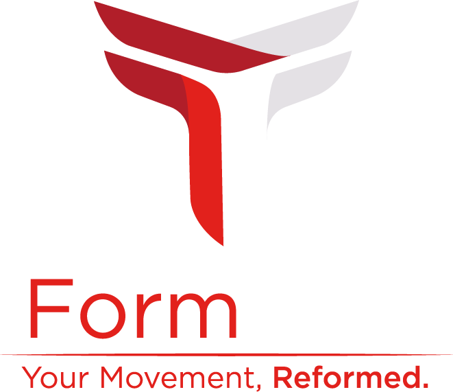

Home
About
Booking

"My passion is injury recovery and prevention through sustainable corrective functional movement. I focus on correcting and enhancing posture, quality of movement and increased performance."-
Hunter Schwietz, Form First Founder